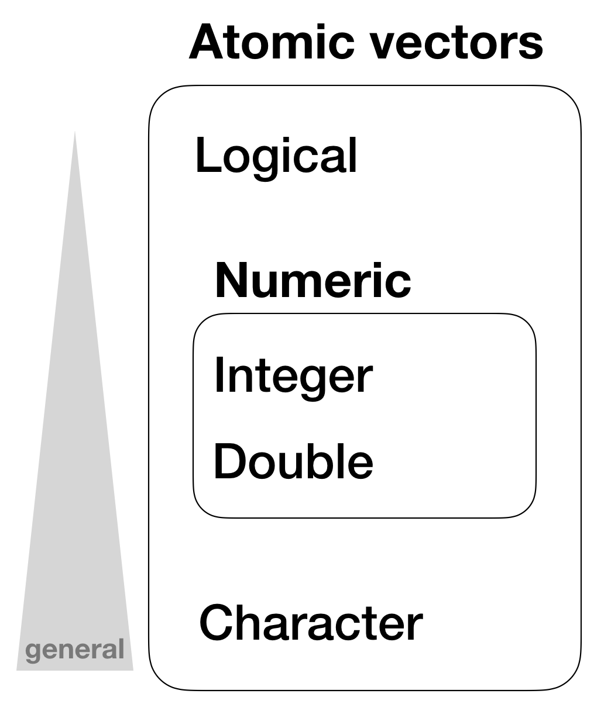

Data Analysis with R
2 - Basics in R
Saskia A. Otto
Postdoctoral Researcher
Basic data types in R

Some of the most basic types are:
- Decimals values like
4.5are called doubles. - Natural numbers like
4are called integers. Integers and doubles are both called numerics. - Boolean values (
TRUEorFALSE) are called logical. - Text (or string) values are called characters.
Some of the most basic types are:
- Decimals values like
4.5are called doubles. - Natural numbers like
4are called integers. Integers and doubles are both called numerics. - Boolean values (
TRUEorFALSE) are called logical. - Text (or string) values are called characters.
my_double <- 42.5
my_integer <- 5
# With the L suffix, you get an integer rather than a double
my_integer_correct <- 5L
my_logical <- TRUE
my_character <- "some text"
# Note how the quotation marks on the right indicate that "some text" is a character.
Whats the data type
To determine the (R internal) type or storage mode of any object or variable use the function typeof()
typeof(my_double)
## [1] "double"
typeof(my_integer)
## [1] "double"
typeof(my_integer_correct)
## [1] "integer"
Test types
You can check if an object is of a specific type with an 'is.' function:
int_var <- 10L
is.integer(int_var)
## [1] TRUE
dbl_var <- 4.5
is.double(dbl_var)
## [1] TRUE
Test types (cont)
Overview of 'is.' functions
| Function | lgl | int | dbl | num | chr |
|---|---|---|---|---|---|
| is.logical() | x | ||||
| is.integer() | x | ||||
| is.double() | x | ||||
| is.numeric() | x | x | x | ||
| is.character() | x |
Missing values
- Missing values are specified with
NA NAwill always be coerced to the correct type if used inside a vector, or you can create NAs of a specific type with:
NA # logical
NA_integer_ # integer
NA_real_ # double
NA_character_ # character
- You can check also for missing values with
is.na()
x <- NA
is.na(x)
## [1] TRUE
Data structures
R’s base data structures can be organised by their dimensionality (1d, 2d, or nd) and whether they’re homogeneous (all contents must be of the same type) or heterogeneous (the contents can be of different types). This gives rise to the five data types most often used in data analysis:
| Dimensions | Homogeneous | Heterogeneous |
|---|---|---|
| 1d | Atomic vector | List |
| 2d | Matrix | Data frame |
| nd | Array |
The most basic structure: atomic vectors
Atomic vectors
- are usually created with
c(), short for combine:
dbl_var <- c(1, 2.5, 4.5)
# Use TRUE and FALSE (or T and F) to create logical vectors
log_var <- c(TRUE, FALSE, T, F)
chr_var <- c("these are", "some strings")
Atomic vectors
- are usually created with
c(), short for combine:
dbl_var <- c(1, 2.5, 4.5)
# Use TRUE and FALSE (or T and F) to create logical vectors
log_var <- c(TRUE, FALSE, T, F)
chr_var <- c("these are", "some strings")
- or with
seq()(= sequence)
seq(from = 0, to = 1, by = 0.2)
## [1] 0.0 0.2 0.4 0.6 0.8 1.0
- or
rep()(= repeat)
rep("a", times = 5)
## [1] "a" "a" "a" "a" "a"
Atomic vectors
- are always flat, even if you nest
c()’s:
c(1, c(2, c(3, 4)))
## [1] 1 2 3 4
# the same as
c(1, 2, 3, 4)
## [1] 1 2 3 4
Hierarchy of data types in atomic vectors

Vector properties
- Its type, which you can determine with
typeof(). - Its length, which you can determine with
length(). - Additional metadata in the form of attributes.
Vector properties
- Its type, which you can determine with
typeof(). - Its length, which you can determine with
length(). - Additional metadata in the form of attributes.
typeof(1:10)
## [1] "integer"
x <- c(200, 50, 40, 1, 100, 20)
length(x)
## [1] 6
Important tools for working with vectors
How to convert from one type to another, and when that happens automatically?
What happens when you work with vectors of different lengths?
How to name the elements of a vector?
How to pull out elements of interest?
1. Coercion
- All elements of an atomic vector must be the same type
- Different types will be coerced to the most flexible type
- Types from least to most flexible are:
- logical < integer < double < character
1. Coercion
- All elements of an atomic vector must be the same type
- Different types will be coerced to the most flexible type
- Types from least to most flexible are:
- logical < integer < double < character
For example, combining a character and an integer yields a character:
str(c("a", 1))
## chr [1:2] "a" "1"
1. Coercion (cont)
When a logical vector is coerced to an integer or double, TRUE becomes 1 and FALSE becomes 0. This is very useful in conjunction with sum() and mean()
x <- c(FALSE, FALSE, TRUE)
as.numeric(x)
## [1] 0 0 1
# Total number of TRUEs
sum(x)
## [1] 1
Your turn...
Quiz 1: Coercion rules
Test your knowledge of vector coercion rules by predicting the output of the following uses of c():
c(1, FALSE)
- logical vector
- integer vector
- double vector
- character vector
- NA
- error message
The infite set of numbers cannot be reduced to simply 2 states whereas TRUE or FALSE can easily be coerced into the two numbers 0 and 1. As the value 1 in this vector is not specified explicitly as integer the vector coerces both to type double.
Quiz 2: Coercion rules
Test your knowledge of vector coercion rules by predicting the output of the following uses of c():
c("a", 1)
- logical vector
- integer vector
- double vector
- character vector
- NA
- error message
A string (in this case "a") has no corresponding number it can be coerced to. But instead, a number such as the 1 can be coerced to a string.
Quiz 3: Coercion rules
Test your knowledge of vector coercion rules by predicting the output of the following uses of c():
c(TRUE, 1L)
- logical vector
- integer vector
- double vector
- character vector
- NA
- error message
Now the number 1 is explicitly defined as integer, hence the TRUE is coerced to the integer 1.
Quiz 4: Coercion rules
x <- c(TRUE, FALSE, TRUE, FALSE, FALSE, TRUE, FALSE, TRUE, TRUE, FALSE)
- What would be the result if you sum up all elements of
x?
Remember, all TRUEs are coerced to 1 and all FALSEs to 0.
Simply use the sum function: sum(x)
- 5
Quiz 5 - Challenge: Coercion rules
Type the following into the R console (or run it in your script), which will create a long vector containing a random number of NAs.
x <- 1:10000
set.seed(123) # so we get all the same results
y <- sample(1:10000, 1) # random number of NAs
z <- sample(1:10000, y) # randomly assign positions of the y NAs
x[z] <- NA # place NAs on the positions in z
- How many
NAs are inx?
Recall, the is.na() function tests for NAs and returns a logical vector, which can be coerced to numbers for further calculations.
You calculate the sum of all true NAs by typing: sum(is.na(x))
- 2876
2. Recycling rules
As well as implicitly coercing the types of vectors to be compatible, R will also implicitly coerce the length of vectors. This is called vector recycling, because the shorter vector is repeated, or recycled, to the same length as the longer vector.
1:10 + 100
## [1] 101 102 103 104 105 106 107 108 109 110
# What will happen with this summation?
1:10 + 1:2
2. Recycling rules
As well as implicitly coercing the types of vectors to be compatible, R will also implicitly coerce the length of vectors. This is called vector recycling, because the shorter vector is repeated, or recycled, to the same length as the longer vector.
1:10 + 100
## [1] 101 102 103 104 105 106 107 108 109 110
# What will happen with this summation?
1:10 + 1:2
## [1] 2 4 4 6 6 8 8 10 10 12
Your turn...
Quiz 6: Recycling rules
What happens when you subset with a positive integer that’s bigger than the length of the vector?
- error message returned
- nothing happens
- the vector gets recycled (e.g. returns 2nd element if vector length is 10 and index value is a 12)
- NA returned
The vector gets indeed extended to the length of the requested element but not by recycling but by filling the gap with NAs.
Quiz 7: Recycling rules
What happens when you subset with a name that doesn’t exist?
- error message returned
- nothing happens
- the vector gets recycled (e.g. returns 2nd element if vector length is 10 and index value is a 12)
- NA returned
Instead of returning an error message, R returns NAs for all those pulled elements that do not exist (by the selected name). Beware of this behaviour and check your results at each step!
3. Naming vectors
All types of vectors can be named. You can name them during creation with c():
c(a = 1, b = 2, c = 4)
## a b c
## 1 2 4
Or afterwards by using the function names()
x <- c(1,5,3)
names(x) <- c("a", "b", "c")
x
## a b c
## 1 5 3
4. Subsetting
[ is the subsetting function, and is called like x[a].
There are 4 ways to subset a vector:
- Using a numeric vector containing only integers
- Subsetting with a logical vector
- Using a named vector
- Using nothing
1.Using a numeric vector containing only integers.
x <- c("one", "two", "three", "four", "five")
# positive integers keep elements at position:
x[c(5, 1, 3)]
## [1] "five" "one" "three"
1.Using a numeric vector containing only integers.
x <- c("one", "two", "three", "four", "five")
# positive integers keep elements at position:
x[c(5, 1, 3)]
## [1] "five" "one" "three"
# repeating integers make vectors longer:
x[c(1,1,1,1,2,2,2,2,3,3,3,4,4,5,5)]
## [1] "one" "one" "one" "one" "two" "two" "two" "two"
## [9] "three" "three" "three" "four" "four" "five" "five"
1.Using a numeric vector containing only integers.
x <- c("one", "two", "three", "four", "five")
# positive integers keep elements at position:
x[c(5, 1, 3)]
## [1] "five" "one" "three"
# repeating integers make vector longer:
x[c(1,1,1,1,2,2,2,2,3,3,3,4,4,5,5)]
## [1] "one" "one" "one" "one" "two" "two" "two" "two"
## [9] "three" "three" "three" "four" "four" "five" "five"
# negative integers remove elements:
x[c(-3,-5)]
## [1] "one" "two" "four"
1.Using a numeric vector containing only integers.
# but you cannot mix
# x[c(1,2,-5)] # --> gives error message
# Using zero
x[0] # --> returns an empty vector
## character(0)
2.Subsetting with a logical vector keeps all values corresponding to a TRUE value. This is most often useful in conjunction with the comparison functions.
x <- c(10, 3, NA, 5, 8, 1, NA)
# All non-missing values of x
b <- is.na(x)
x[!b] # the ! reverses the TRUE/FALSE values
## [1] 10 3 5 8 1
# All even (or missing!) values of x
x[x %% 2 == 0]
## [1] 10 NA 8 NA
3.If you have a named vector, you can subset it with a character vector:
x <- c(abc = 1, def = 2, xyz = 5)
x[c("xyz", "def")]
## xyz def
## 5 2
# you can also duplicate elements
x[c("xyz", "def", "def")]
## xyz def def
## 5 2 2
4.Using nothing returns the original vector. More important for other data structures
x[]
## abc def xyz
## 1 2 5
Your turn...
Quiz 8: Subsetting
A vector x has been created by drawing 20 numbers randomly from 1 to 1000:
set.seed(1) # (= state of the Random Number Generator set to 1)
x <- sample(1:1000, 20)
Try it out yourself and answer the following 3 questions:
- Which number does the 5th element of the vector x have?
- What is the sum of the first 4 elements of x?
- What is the sum if the 3rd and 15th element are excluded?
1.To get the 5th element: x[5]
2.To sum up over the first 4 elements:
sum(x[1:4])or sum(x[c(1,2,3,4)])
3.To remove the 3rd and 15th element before summation:
sum(x[c(-3, -15)])
- 201
- 2116
- 9672
Attributes
- All objects can have arbitrary additional attributes, used to store metadata about the object.
- Attributes can be thought of as a named list (with unique names).
- Attributes can be accessed individually with
attr()or all at once (as a list) withattributes().
Attributes
- All objects can have arbitrary additional attributes, used to store metadata about the object.
- Attributes can be thought of as a named list (with unique names).
- Attributes can be accessed individually with
attr()or all at once (as a list) withattributes().
y <- 1:10
attr(y, "my_attribute") <- "This is a vector"
attr(y, "my_attribute")
## [1] "This is a vector"
attributes(y)
## $my_attribute
## [1] "This is a vector"
Attributes (cont)
- The three most important attributes are:
- Names, a character vector giving each element a name.
- Dimensions, used to turn vectors into matrices and arrays.
- Class, used to implement the S3 object system.
Attributes (cont)
- The three most important attributes are:
- Names, a character vector giving each element a name.
- Dimensions, used to turn vectors into matrices and arrays.
- Class, used to implement the S3 object system.
Each of these attributes has a specific accessor function to get and set values:
names(x)dim(x)class(x)
Factors
One important use of attributes is to define factors. Factors are
- vectors that can contain only predefined values,
- used to store categorical data,
- built on top of integer vectors using two attributes:
- the class, “factor”, which makes them behave differently from regular integer vectors,
- and the levels, which defines the set of allowed values.
- for more on factors see lecture 10
Factors (cont)
x <- factor(c("a", "b", "b", "a"))
x
## [1] a b b a
## Levels: a b
class(x)
## [1] "factor"
levels(x)
## [1] "a" "b"
Vectorized operations in R
Basic calculation example
a <- c(1,2,3,4)
c <- (a + sqrt(a))/(exp(2)+1)
c
## [1] 0.2384058 0.4069842 0.5640743 0.7152175
Why 4 values???
Vectorized calculations
R calculations are vectorized, that means certain calculations are done with each element of a vector.
Vectorized calculations
R calculations are vectorized, that means certain calculations are done with each element of a vector.
Guess...
a <- c(1,2,3,4)
b <- 10
a + b
a * b
Vectorized calculations
R calculations are vectorized, that means certain calculations are done with each element of a vector.
Guess...
a <- c(1,2,3,4)
b <- 10 # b gets recycled to the length of a
a + b # = a[1] + b[1], a[2] + b["2"], a[3] + b["3"], a[4] + b["4"]
## [1] 11 12 13 14
a * b # = a[1] * b[1], ...
## [1] 10 20 30 40
Your turn...
Quiz 9: Total Sums of Squares \(\sum_{i=1}^{n} \left(x_{i} - \bar{x}\right)^{2}\)
Calculate for the following vector
set.seed(1)
x <- sample(1:20, 20, replace = TRUE)
the sum, over all observations, of squared deviation of each observation from the overall mean.
- Write the result in the following box and compare
The follow functions are useful: sum(), mean().
Remember, the calculation needs to be from the innermost to the
outermost parenthesis (just like a calculator). So your order should be:
1. calculate deviations of vector,
2. square deviations,
3. sum all up.
sum( (x-mean(x))^2 )
- 594.8
Overview of functions you learned today
c(), typeof(), length(), is.logical(), as.logical(), is.integer(), as.integer(), is.double(), as.double(), is.numeric(), as.numeric(), is.character(), as.character(), str(),
names(), [], is.na(), set.seed(), sample(), attr(), attributes(), dim(), class(),
factor(), levels(),
+, -, *, /, ^, sqrt(), exp()
How do you feel now.....?
Totally confused?

Try out the online tutorial at Data Camp
Totally bored?

Don't worry! Soon you won't be bored anymore!!
Totally content?
Then go grab a coffee, lean back and enjoy the rest of the day...!

Thank You
For more information contact me: saskia.otto@uni-hamburg.de
http://www.researchgate.net/profile/Saskia_Otto
http://www.github.com/saskiaotto

This work is licensed under a
Creative Commons Attribution-ShareAlike 4.0 International License except for the
borrowed and mentioned with proper source: statements.
Image on title and end slide: Section of an infrared satallite image showing the Larsen C
ice shelf on the Antarctic
Peninsula - USGS/NASA Landsat:
A Crack of Light in the Polar Dark, Landsat 8 - TIRS, June 17, 2017
(under CC0 license)